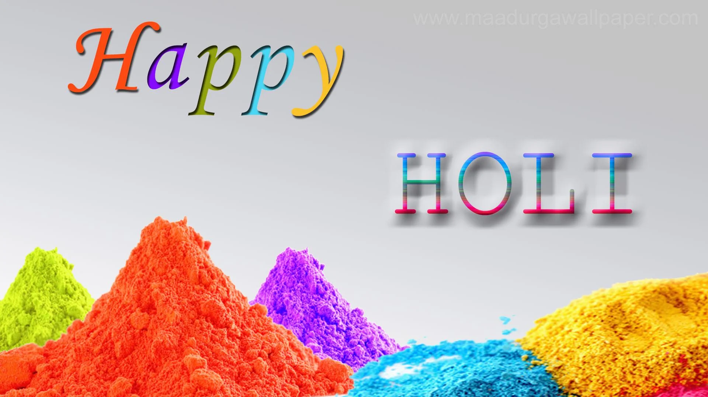
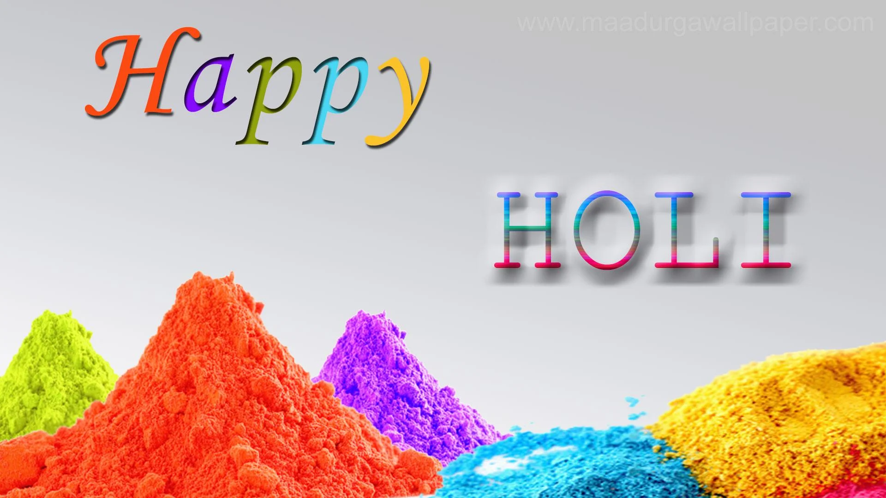

Festivals in India are celebrated in many parts of India, as India is subdivided into different Linguistic States. The local Government in each State also specifies certain festivals, in addition to Central Government festivals and holidays, depending on the local population which have elected them.
Diwali
Onam
 Holi

Holi
